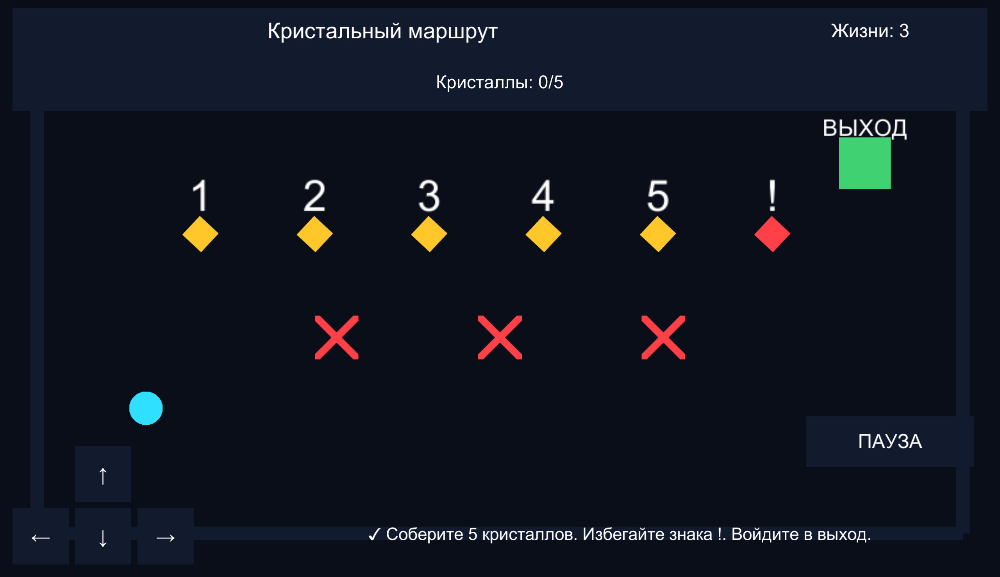
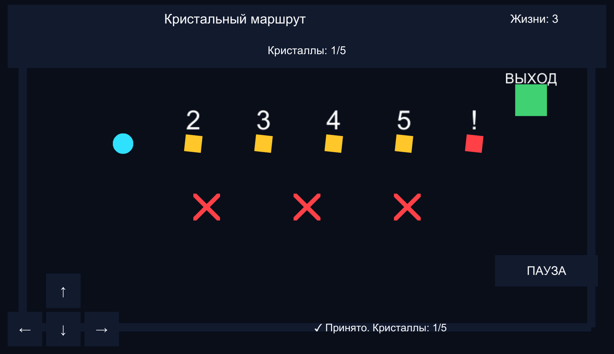
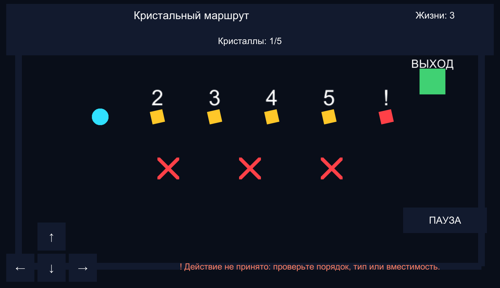
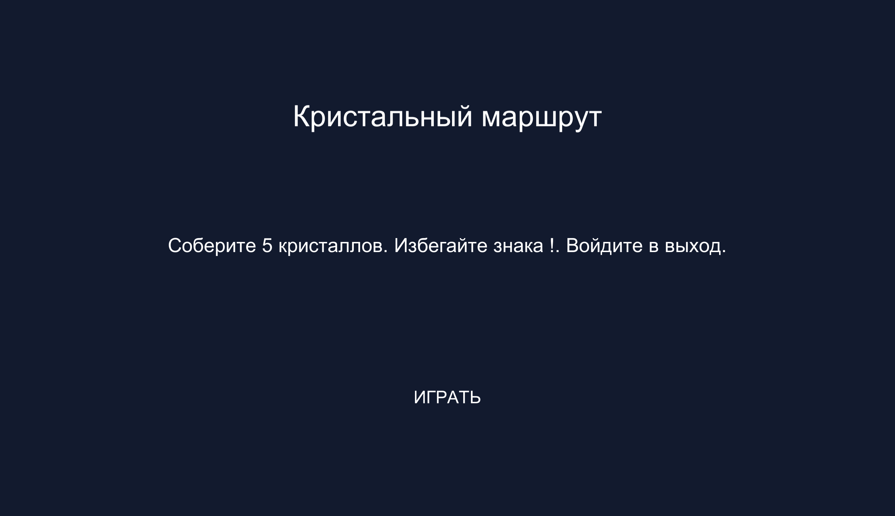
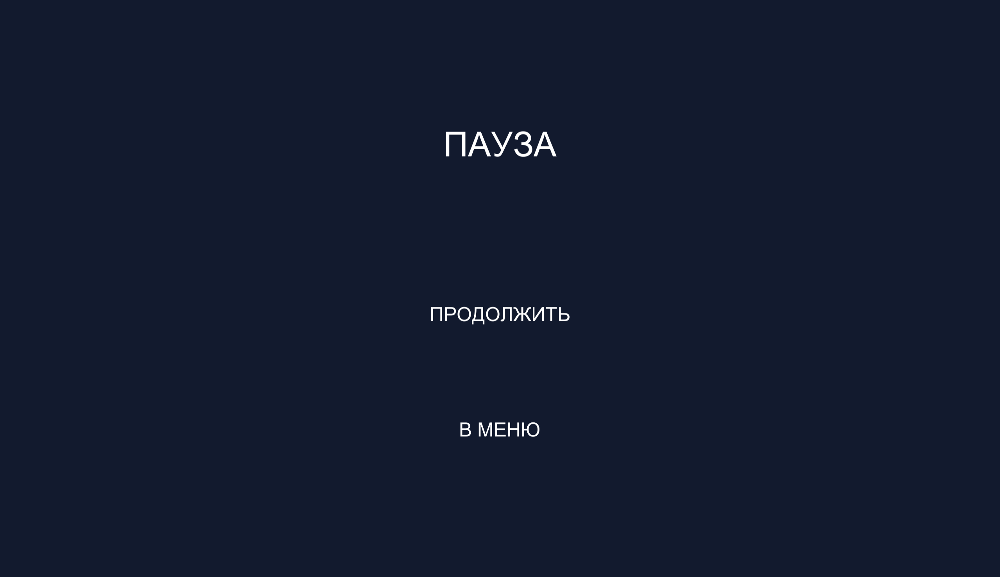
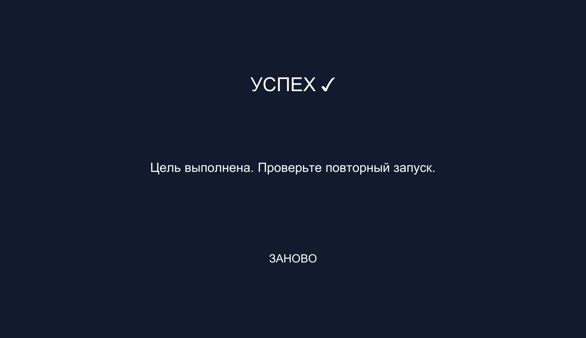
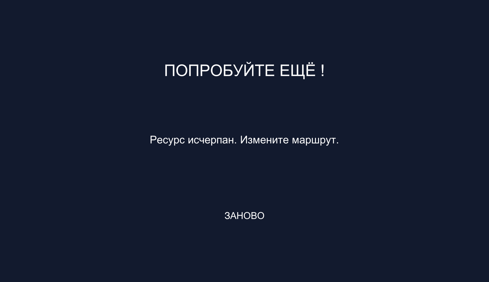
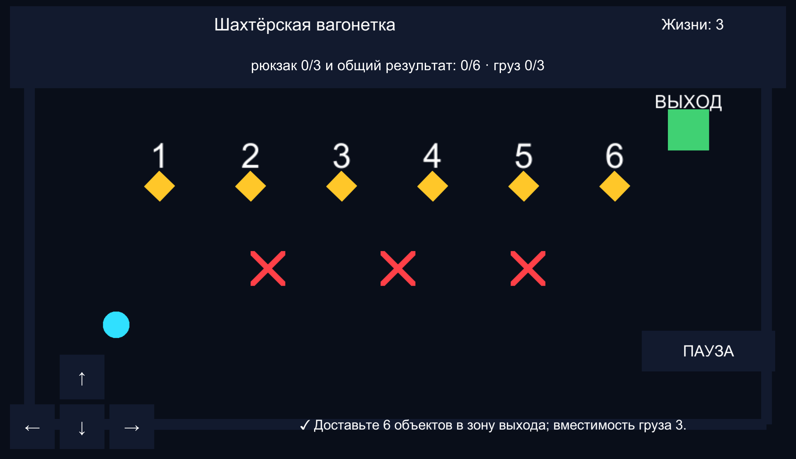

Кристальный маршрут
Отдельный образец решения общей задачи. Не является студенческим вариантом.
Учебный маршрут / год уточняется
Оформление игрового продукта · 30 индивидуальных вариантов
Учебный комплектОтдельный образец решения общей задачи. Не является студенческим вариантом.
УП.ПМ.13 · оформление и проверка
Мы оформляем «Кристальный маршрут»: пять правильных предметов, один предупреждающий, опасности и выход. Исходная механика уже работает. Сначала воспроизводим состояние, затем объясняем причину неудобства, изменяем ответственный компонент и повторяем проверку.
В исходной сцене объекты сохранены до запуска. GameBootstrap ничего не создаёт; GameManager работает с назначенными ссылками. Поэтому сцена пригодна для редактирования, префабов и сохранения. Не переносите в неё старый GameManager с OnGUI.
Решение демонстрационной области показывает технический приём. Для своего варианта вы самостоятельно выбираете палитру, формы, подписи, компоновку и сигналы, пользуясь готовым правилом из профиля.
УП.ПМ.13 · оформление и проверка
Скачать исходный Unity-проект с готовыми правилами 30 вариантов (ZIP)
Начните с него: распакуйте архив, откройте Main, сохраните Student и задайте свой Variant Number.
Скачать оформленный «Кристальный маршрут» для сверки (ZIP)
Используйте после самостоятельного изменения: откройте Assets/Scenes/Demonstration.unity. Это пример другой области.
Скачайте исходный архив под заголовком, распакуйте его в отдельную папку. Внутри должны быть Assets, Packages и ProjectSettings. В Unity Hub выберите Projects → Add → Add project from disk и укажите эту папку.
В Unity Project раскройте Assets → Scenes, дважды щёлкните Main. До Play в Hierarchy видны Main Camera, GameManager, Player, Item-1…Item-6, Hazard-1…Hazard-3, Exit, Canvas и EventSystem.
Нажмите Play, затем «Играть». Выйдите к предмету №1, затем к №6: №1 принимается, №6 отклоняется. Раньше пяти правильных предметов выход не завершает игру. Остановите Play и убедитесь, что объекты остались в Hierarchy.
File → Save As: сохраните сцену как Assets/Scenes/Student.unity. Дальше редактируйте её. Папку оформленного примера держите отдельно: сначала выполните изменение и проверку, затем сравнивайте.

УП.ПМ.13 · оформление и проверка
Выберите GameManager в Hierarchy. В одноимённом компоненте назначены Player, Hud, Screens, Theme, Audio Feedback, Items, Profiles и Gate Indicators. Items содержит шесть объектов, Profiles — Assets/profiles.json.
Canvas содержит HUDView и ScreenMockupController. GameManager вызывает ShowProgress после изменения состояния и ShowResult при завершении. Здесь нет второго HUD через OnGUI: видимый интерфейс и данные связаны.
Дважды щёлкните Assets/Scripts/GameManager.cs. Найдите Collect → Refresh → HUDView.ShowProgress; TryFinishLevel → Finish → HUDView.ShowResult → Screens.ShowResult. Эти связи уже включены в исходник. Не дописывайте повторные вызовы звука.
В Play соберите один предмет. ProgressText меняется один раз. В Console нет NullReferenceException. Если поле пустое, остановите Play и назначьте сохранённый объект сцены, а не объект другого открытого проекта.
УП.ПМ.13 · оформление и проверка
Палитра — ограниченный набор цветов с постоянным смыслом. В демонстрации фон тёмный, игрок голубой, цель жёлтая, опасность красная, выход зелёный. Запишите цвета и объясните назначение каждого.
Остановите Play. Выберите GameManager → VisualTheme. В полях Background, Surface, Player, Target, Danger, Success, Text и Accent задайте цвета. В окне цвета используйте RGB/HEX: фон #09101A, поверхность #121A2E, игрок #30E0FF, цель #FFC729, опасность #FF4047, выход #40D172, текст #FFFFFF.
Player имеет ThemeRole → Player. Item-N → Visual имеет Target, Hazard-N — Danger, Exit — Success. Если заменяете изображение, сохраните этот компонент. Theme.Apply применяет цвет при старте ко всем назначенным ролям, включая скрытые панели.
Не меняйте только Sprite Renderer.Color: при новом запуске VisualTheme снова применит роль. Для постоянного изменения правьте поле палитры или ThemeRole. Сериализованное значение Inspector имеет приоритет над начальным значением поля в C#.
Запустите, сравните роли, остановите и запустите снова. Цвета повторяются. В оттенках серого роли должны отличаться силуэтом, значком или подписью.
УП.ПМ.13 · оформление и проверка
В Project → Assets → Scripts дважды щёлкните VisualTheme.cs. Эти классы уже включены в исходный проект: не создавайте второй файл с тем же классом. Автоматический шаблон MonoBehaviour здесь не нужен.
Найдите метод или поле по имени из инструкции. Заменяйте только указанную логическую часть, сохраняйте Cmd+S/Ctrl+S, возвращайтесь в Unity и ждите компиляции. Полные версии ниже взяты из оформленного примера и служат для сверки границ класса, а не требуют копирования всех файлов одновременно.
После изменения одного метода проверьте его результат. Красная строка Console означает, что дальше продолжать нельзя: двойной щелчок открывает указанную строку. Сначала исправьте первую ошибку — последующие могут быть её следствием.
УП.ПМ.13 · оформление и проверка
В Assets создайте папку Art/MyVariant через правый щелчок → Create → Folder. Перетащите PNG в эту папку. Выберите его: Texture Type → Sprite (2D and UI), Sprite Mode → Single, Pixels Per Unit → 64. Для пиксельной графики Filter Mode → Point, для гладкой → Bilinear; нажмите Apply.
Раскройте Item-1 → Visual. Перетащите новый спрайт в Sprite Renderer → Sprite. Масштаб изображения меняйте на Visual. На родительском Item-1 оставьте Collectible и Collider: правило и столкновения не должны вращаться вместе с рисунком.
Выберите Player: замените Sprite, сохраните Rigidbody 2D и PlayerController. Body Type — Dynamic, Gravity Scale — 0, Freeze Rotation Z включён. На Hazard оставьте триггер. Edit Collider позволяет подогнать границу к видимому объекту.
У Item-N есть дочерний Number с Text Mesh; номер помогает проверять порядок и тип. Изменяйте Text на название/символ своего варианта, сохраняя понятную связь с профилем. У №6 демонстрации поставьте «!» и роль Danger на Visual.
Проверьте касание предмета, опасности и выхода. После изменения Scale игрок не должен проходить через стену или останавливаться далеко от неё. Оформление не меняет целевое число и правило приёма.
УП.ПМ.13 · оформление и проверка
Префаб хранит повторно используемый объект вместе с компонентами. Изменение образца можно перенести на экземпляры. В исходном проекте уже есть Player, Item, Hazard и Button в Assets/Prefabs.
Остановите Play. Создайте Assets/Prefabs/MyVariant. Перетащите Item-1 из Hierarchy в эту папку и назовите VariantItem. В образец попадут Visual, Number, Collider, Collectible и CollectibleVisual.
Если заменяете остальные предметы экземплярами своего префаба, задайте каждому Collectible.Index: 0,1,2,3,4,5. Добавьте новые экземпляры в соответствующие позиции GameManager.Items. Нельзя оставлять одинаковый Index у всех: последовательность и типы станут неверными.
Измените Visual экземпляра, затем Overrides → Apply All только для общих параметров. Индивидуальный Index сохраняйте как отличие экземпляра. Применение всех индивидуальных значений к общему префабу требует повторной проверки остальных предметов.
Сохраните Student, повторно откройте её и проверьте все шесть ссылок Items. Префаб — средство повторного оформления; ссылки в GameManager должны указывать на экземпляры сцены.
УП.ПМ.13 · оформление и проверка
Выберите Item-1 → CollectibleVisual. Поле Visual указывает на дочерний Transform, Rotation Speed — скорость вращения, Pulse Amount — доля изменения масштаба, Pulse Speed — частота пульсации.
Если компонент удалён, нажмите Add Component → CollectibleVisual на родительском Item-1. Перетащите дочерний Visual в поле Visual. Задайте 70, 0.08 и 4. Сохраните сцену. Для неподвижной цели задайте Rotation Speed = 0.
В Assets/Scripts/CollectibleVisual.cs сначала разберите OnEnable: он сохраняет initialScale. Затем Update: Rotate использует deltaTime, Sin изменяет масштаб вокруг начального. OnDisable восстанавливает масштаб и поворот; без этого повторный запуск может накопить искажение.
Запустите: изображение вращается, родительский Collider остаётся неподвижным. Соберите предмет, перезапустите — прежний масштаб восстановлен. Не назначайте корневой Item в поле Visual.
УП.ПМ.13 · оформление и проверка
Не создавайте второй Canvas. Выберите Canvas: Render Mode → Screen Space - Overlay. Canvas Scaler: Scale With Screen Size, Reference Resolution 1280×720, Match Width Or Height, Match = 0. EventSystem в сцене один.
Якоря — точки привязки Rect Transform к родителю. Canvas/GamePanel/HUDPanel растянут по верхнему краю: Anchor Min (0,1), Max (1,1), Left 16, Right 16, Top 10, Height 132. Это сохраняет ширину панели при смене размера.
Масштаб привязан к ширине, поэтому длинные подписи не выходят за боковые края портретного экрана. CameraFit отдельно сохраняет всё поле в камере; уменьшение поля в портретном виде не изменяет правило.
Game View → список разрешений → плюс: создайте Fixed Resolution 1280×720 и 720×1280. Проверьте оба. Если текст обрезан, измените высоту Rect Transform и размер шрифта, а не отключайте масштабирование.
УП.ПМ.13 · оформление и проверка
Canvas → GamePanel → HUDPanel содержит TitleText, ProgressText, LivesText. HintText расположен непосредственно в GamePanel. Панель результата заранее существует рядом с GamePanel и содержит ResultTitle, ResultMessage, RestartButton.
Исходный проект использует UnityEngine.UI.Text — UI → Legacy → Text. Не подставляйте TextMeshPro в поля типа Text. Для нового текста выберите Canvas/GamePanel → правый щелчок → UI → Legacy → Text; назовите HintText и настройте перенос по ширине.
Выберите Canvas → HUDView: Title Text ← HUDPanel/TitleText, Progress Text ← ProgressText, Lives Text ← LivesText, Hint Text ← GamePanel/HintText, Result Title/Message ← ResultPanel/ResultTitle и ResultMessage. Menu Title/Goal ← MainMenuPanel/MenuTitle и MenuGoal.
TitleText: Font Size 28, Alignment Middle Center, верхняя часть панели. ProgressText: 23, нижняя часть, перенос включён. LivesText: 24 справа сверху. HintText: 22, внизу справа от управления. При длинном названии уменьшайте размер или увеличивайте область, сохраняя читаемость.
Соберите предмет и коснитесь опасности. Изменяются соответствующие поля. При пустом значении ищите неназначенную ссылку; при неизменном показателе — GameManager.Hud и вызов Refresh, а не цвет текста.
УП.ПМ.13 · оформление и проверка
Изменение счётчика подтверждает принятую операцию; предупреждение объясняет отказ. Цвет дополняется текстом и символом, чтобы сигнал оставался понятным без цветового различения.
Откройте Assets/Scripts/HUDView.cs, найдите ShowHint. Замените его тело двумя строками из соответствующего листинга: сначала присвойте текст с «!» или «✓», затем выберите цвет по warning. Сигнатуру ShowHint(string message, bool warning) сохраните: её использует GameManager.
warning передаёт результат проверки правила, а не угадывается по содержимому строки. Collect вызывает ShowHint с false, Warn — с true. Это позволяет менять текст и язык, не ломая выбор сигнала.
До победы коснитесь правильного предмета и №6. У принятого действия прогресс растёт; у отклонённого — остаётся прежним, причина выделяется символом. Проверьте, что сигнал не закрывает управление.


УП.ПМ.13 · оформление и проверка
Canvas/GamePanel содержит Direction-0…Direction-3. У каждой Button, Image и DirectionalButton. На дочернем Label — стрелка. В DirectionalButton.Direction установлены Up (0,1), Down (0,-1), Left (-1,0), Right (1,0).
Правый щелчок на GamePanel → UI → Legacy → Button. Назовите ButtonUp; Rect Transform: якорь Bottom Left, Pivot (0,0), Width/Height 72, Pos X 96, Pos Y 96. Add Component → DirectionalButton, Direction (0,1). Проверьте, что Image.Raycast Target включён.
OnClick срабатывает после отпускания. Для непрерывного движения DirectionalButton обрабатывает PointerDown, PointerUp и PointerExit. При выходе указателя или скрытии экрана направление сбрасывается.
Button → Transition: Color Tint. ThemeRole применяет Normal, Highlighted и Pressed из палитры. Настраивайте Surface, Accent и Success у VisualTheme. После запуска проверьте наведение и удержание.
Удерживайте кнопку, отпустите, уведите указатель. Движение прекращается. Поставьте паузу при движении: накопленного направления после продолжения нет.
УП.ПМ.13 · оформление и проверка
Выберите GameManager → AudioFeedback и Audio Source. Play On Awake выключен, Spatial Blend = 0. Новый AudioFeedback добавлять не нужно: он уже связан с GameManager.Audio Feedback.
Создайте Assets/Audio/MyVariant, перетащите WAV/OGG. В Inspector: Load Type → Decompress On Load, Compression Format → PCM или Vorbis; нажмите Apply, проверьте прослушивание. Укажите источник и лицензию в описании материалов.
Перетащите файлы в Collect Clip, Warning Clip, Success Clip, Failure Clip. Пустые поля автоматически получают короткие синтезированные сигналы; это собственный программный материал, внешняя лицензия не нужна.
Collect → PlayCollect; Warn → PlayHazard; Finish(true) → PlaySuccess; Finish(false) → PlayFailure. Не вызывайте звук в Update и не вставляйте второй вызов в обработчик: событие уже подключено.
Проверьте по одному событию каждого типа. Если тишина, проверьте системную громкость, Mute Audio в Game, AudioListener на Main Camera и назначенный AudioSource. Наличие клипа не подтверждает слышимость.
УП.ПМ.13 · оформление и проверка
Canvas содержит MainMenuPanel, GamePanel, PausePanel и ResultPanel. Все ссылки ScreenMockupController заполнены до запуска. Не создавайте ещё одну ResultPanel внутри Screens: HUD и контроллер должны использовать одну панель.
Раскройте PlayButton → Button → On Click: объект GameManager, метод GameManager.StartGame. PauseButton → PauseGame; ResumeButton → ResumeGame; MenuButton → GoToMenu; RestartButton → RestartGame. Чтобы восстановить событие, нажмите «+», перетащите GameManager и выберите метод в выпадающем списке.
GameManager.Start показывает меню и устанавливает остановку через ScreenMockupController. Нажатие «Играть» вызывает StartGame → ResetState → ResumeGame, которое устанавливает Time.timeScale = 1. При паузе IsPlaying выключается и направление сбрасывается.
На MainMenuPanel задайте название, цель и заметную кнопку запуска. PausePanel объясняет приостановку и содержит продолжение. ResultPanel показывает причину завершения и кнопку нового запуска. Сохраните общие поля шрифта, цвета и отступов.
Пройдите меню → игра → пауза → продолжение → результат → заново. Прогресс на паузе не меняется. После результата управление остановлено. Остановите Play: Time.timeScale возвращается к 1.




УП.ПМ.13 · оформление и проверка
Остановите Play. В GameManager задайте Variant Number от 1 до 30 по своей карточке. Номер 0 оставлен демонстрации. Поле Profiles ссылается на Assets/profiles.json; менять его путь не нужно.
В profiles.json записи идут в порядке вариантов. title задаёт название, goal — условие, mode — готовое правило, target — цель, capacity — вместимость, resource — ограниченный ресурс. HUD читает состояние правила, поэтому цвет не подменяет механику.
mode 0 — принятие правильного типа; 1 — порядок №1–5; 2 — перенос по одному; 3 — груз ограниченной вместимости; 4 — три разных типа; 5 — разные переключатели и индикаторы доступа. Для ресурса действует дополнительная шкала 90…0, исчерпание завершает попытку.
Числовые значения и условности модели заданы в карточке. Для комплекта каждому типу соответствует один номер; повторные предметы имеют тот же тип. В доступе индикаторы показывают разрешение выхода, физические стены уровня не перестраиваются. Это общая учебная основа для оформления разных состояний.
Сохраняйте работающий rule; меняйте название, символы предметов, формы, палитру, расположение текста и звуки. Для своей области соотнесите абстрактные номера с сущностями: например №1 — первый ингредиент, а зона выхода — место доставки. Подпишите соответствие в меню и отчёте.

УП.ПМ.13 · оформление и проверка
По карточке составьте соответствие «игровая сущность → объект сцены → поле HUD → событие → ожидаемый сигнал». Это позволяет понять, что именно оформлять и как проверить.
Реализуйте обязательный визуальный сигнал области: форму, подпись, отметку прогресса и изменение после события. Для независимых отметок используйте строку состояния с номерами/галочками, для груза — число и пиктограмму, для порядка — выделение следующего номера.
В HUDView.ShowProgress можно изменить компоновку текста, сохраняя переданные title, progress и lives. Не вычисляйте игровой прогресс в HUD: источник данных — GameManager. Если добавили новое текстовое поле, создайте объект Legacy Text, публичное поле Text и назначьте ссылку в Inspector.
Для доставки добавьте рядом с прогрессом подпись зоны приёмки; для порядка поставьте номер следующей операции в заметную рамку; для доступа замените GateIndicator на пиктограммы с теми же связями. Опишите, что увидит пользователь до и после действия.
Проверьте свой принятый и отклонённый случай, затем паузу, поражение, победу и сброс. Оформление нового показателя не должно скрывать жизни или перекрывать кнопки.
УП.ПМ.13 · оформление и проверка
Сохраните Student. Очистите Console, запустите меню и игру. Повторите сценарии задания с ожидаемыми и фактическими результатами. При ошибке укажите точный объект, компонент, поле или метод.
Остановите Play и снова откройте Student. Проверьте палитру, ссылки HUD, OnClick и индексы предметов. Только затем повторите запуск. Этот тест отличает сохранённую настройку от временной правки в Play.
File → Build Profiles. Выберите установленный профиль своего компьютера; в Scene List включите Student и исключите остальные сцены. Нажмите Build, укажите отдельную папку Build вне учебных исходников. Если модуль платформы не установлен, зафиксируйте ограничение и не отмечайте сборку выполненной.
Запустите полученное приложение и проверьте меню, управление, принятую/отклонённую операцию, паузу и новый запуск. Работа в редакторе и запуск отдельного приложения — разные проверки; запишите только фактически выполненное.
Используйте общий шаблон отчёта: заполните исходные условия, изменения, проверки, вывод, дату, версию Unity и ссылку на репозиторий своего проекта. При сдаче проекта приложите ссылку на его репозиторий. Не заполняйте ожидаемый результат как фактически полученный.
УП.ПМ.13 · оформление и проверка
В этой основе объекты должны быть сохранены в Student. Если исчезли все игровые объекты, проверьте, не открыта ли старая пустая Main и не скопирован ли старый GameBootstrap. Откройте сохранённую сцену из исходного архива.
Поле HUDView принимает UnityEngine.UI.Text. TMP_Text несовместим с ним. Выберите существующий Legacy Text или создайте именно UI → Legacy → Text. Не перетаскивайте родительскую Panel.
Проверьте PlayButton.OnClick → GameManager.StartGame и ResumeButton → ResumeGame. Изменение активности Panel само по себе не восстанавливает Time.timeScale.
Проверьте Variant Number, порядок GameManager.Items и Collectible.Index. Для последовательности принимается только следующий индекс, для комплекта повторный тип отклоняется, при переносе прогресс увеличивается в зоне доставки.
Поле CollectibleVisual.Visual должно указывать на дочернее изображение. Корневой Item хранит Collider и не должен масштабироваться анимацией.
В исходном Main нейтральная палитра. Измените значения VisualTheme в Student и сохраните сцену вне Play. Не ограничивайтесь цветом Sprite Renderer.
УП.ПМ.13 · оформление и проверка
Файл Assets/Scripts/VisualTheme.cs. Показан законченный метод или объявления полей. При правке найдите Поля и устройство класса в существующем файле; заменяйте эту логическую часть, сохраняя остальные методы и внешние скобки класса. Это авторский код основы, а не автоматически созданный шаблон Unity.
using UnityEngine;
using UnityEngine.UI;
public class VisualTheme : MonoBehaviour
{
[Header("Палитра: роль цвета сохраняется на всех экранах")]
public Color background = new Color(0.035f, 0.055f, 0.10f);
public Color surface = new Color(0.07f, 0.10f, 0.18f);
public Color player = new Color(0.19f, 0.88f, 1f);
public Color target = new Color(1f, 0.78f, 0.16f);
public Color danger = new Color(1f, 0.25f, 0.28f);
public Color success = new Color(0.25f, 0.82f, 0.45f);
public Color text = Color.white;
public Color accent = new Color(0.16f, 0.55f, 0.75f);
Палитра хранится в полях Inspector; Apply выбирает роль и обновляет SpriteRenderer, Graphic и состояния Button. Значения Inspector сохраняются в сцене. Сохраните файл, дождитесь компиляции и повторите связанный сценарий.
УП.ПМ.13 · оформление и проверка
Файл Assets/Scripts/VisualTheme.cs. Показан законченный метод или объявления полей. При правке найдите Apply в существующем файле; заменяйте эту логическую часть, сохраняя остальные методы и внешние скобки класса. Это авторский код основы, а не автоматически созданный шаблон Unity.
public void Apply()
{
Camera.main.backgroundColor = background;
foreach (ThemeRole item in FindObjectsByType<ThemeRole>(FindObjectsInactive.Include, FindObjectsSortMode.None))
{
Color color = item.role switch
{
ThemeRole.Role.Player => player,
ThemeRole.Role.Target => target,
ThemeRole.Role.Danger => danger,
ThemeRole.Role.Success => success,
ThemeRole.Role.Text => text,
_ => surface
};
if (item.TryGetComponent(out SpriteRenderer sprite)) sprite.color = color;
if (item.TryGetComponent(out Graphic graphic)) graphic.color = color;
if (item.TryGetComponent(out Button button))
{
if (item.TryGetComponent(out Graphic buttonGraphic)) buttonGraphic.color = Color.white;
ColorBlock states = button.colors;
states.normalColor = surface;
states.highlightedColor = accent;
states.pressedColor = success;
button.colors = states;
}
}
}
}Сначала задаётся фон камеры. Затем перебираются роли, выбирается цвет и обновляется графический компонент. У кнопки Graphic остаётся белым, а ColorBlock задаёт состояния: иначе цвета перемножатся и кнопка станет слишком тёмной. Сохраните файл, дождитесь компиляции и повторите связанный сценарий.
УП.ПМ.13 · оформление и проверка
Файл Assets/Scripts/ThemeRole.cs. Показан законченный метод или объявления полей. При правке найдите Поля и устройство класса в существующем файле; заменяйте эту логическую часть, сохраняя остальные методы и внешние скобки класса. Это авторский код основы, а не автоматически созданный шаблон Unity.
using UnityEngine;
public class ThemeRole : MonoBehaviour
{
public enum Role { Surface, Player, Target, Danger, Success, Text }
public Role role;
}Компонент задаёт смысл цвета. Роль связывает оформление со значением объекта, не меняя игровые правила. Сохраните файл, дождитесь компиляции и повторите связанный сценарий.
УП.ПМ.13 · оформление и проверка
Файл Assets/Scripts/HUDView.cs. Показан законченный метод или объявления полей. При правке найдите Поля и устройство класса в существующем файле; заменяйте эту логическую часть, сохраняя остальные методы и внешние скобки класса. Это авторский код основы, а не автоматически созданный шаблон Unity.
using UnityEngine;
using UnityEngine.UI;
public class HUDView : MonoBehaviour
{
public Text titleText, progressText, livesText, hintText;
public Text resultTitle, resultMessage, menuTitle, menuGoal;
Методы получают состояние извне. ShowProgress обновляет показатели, ShowHint различает принятие и отказ, ShowResult объясняет завершение. Сохраните файл, дождитесь компиляции и повторите связанный сценарий.
УП.ПМ.13 · оформление и проверка
Файл Assets/Scripts/HUDView.cs. Показан законченный метод или объявления полей. При правке найдите ShowProgress в существующем файле; заменяйте эту логическую часть, сохраняя остальные методы и внешние скобки класса. Это авторский код основы, а не автоматически созданный шаблон Unity.
public void ShowProgress(string title, string progress, int lives)
{
titleText.text = title;
progressText.text = progress;
livesText.text = "Жизни: " + lives;
}
Три присваивания обновляют название, прогресс и жизни. Измените формат одной подписи, затем проверьте обновление при сборе и повреждении: здесь нельзя менять само число собранных предметов. Сохраните файл, дождитесь компиляции и повторите связанный сценарий.
УП.ПМ.13 · оформление и проверка
Файл Assets/Scripts/HUDView.cs. Показан законченный метод или объявления полей. При правке найдите ShowHint в существующем файле; заменяйте эту логическую часть, сохраняя остальные методы и внешние скобки класса. Это авторский код основы, а не автоматически созданный шаблон Unity.
public void ShowHint(string message, bool warning)
{
hintText.text = (warning ? "! " : "✓ ") + message;
hintText.color = warning ? new Color(1f, 0.5f, 0.4f) : Color.white;
}
Сначала составляется текст с признаком принятия/отказа; затем выбирается цвет предупреждения. Измените только тело этого метода, сохранив параметры: GameManager уже передаёт message и warning. Сохраните файл, дождитесь компиляции и повторите связанный сценарий.
УП.ПМ.13 · оформление и проверка
Файл Assets/Scripts/HUDView.cs. Показан законченный метод или объявления полей. При правке найдите SetGoal в существующем файле; заменяйте эту логическую часть, сохраняя остальные методы и внешние скобки класса. Это авторский код основы, а не автоматически созданный шаблон Unity.
public void SetGoal(string title, string goal)
{
menuTitle.text = title;
menuGoal.text = goal;
}
Методы получают состояние извне. ShowProgress обновляет показатели, ShowHint различает принятие и отказ, ShowResult объясняет завершение. Сохраните файл, дождитесь компиляции и повторите связанный сценарий.
УП.ПМ.13 · оформление и проверка
Файл Assets/Scripts/HUDView.cs. Показан законченный метод или объявления полей. При правке найдите ShowResult в существующем файле; заменяйте эту логическую часть, сохраняя остальные методы и внешние скобки класса. Это авторский код основы, а не автоматически созданный шаблон Unity.
public void ShowResult(bool won)
{
resultTitle.text = won ? "УСПЕХ ✓" : "ПОПРОБУЙТЕ ЕЩЁ !";
resultMessage.text = won ? "Цель выполнена. Проверьте повторный запуск." : "Ресурс исчерпан. Измените маршрут.";
}
}Методы получают состояние извне. ShowProgress обновляет показатели, ShowHint различает принятие и отказ, ShowResult объясняет завершение. Сохраните файл, дождитесь компиляции и повторите связанный сценарий.
УП.ПМ.13 · оформление и проверка
Файл Assets/Scripts/CollectibleVisual.cs. Показан законченный метод или объявления полей. При правке найдите Поля и устройство класса в существующем файле; заменяйте эту логическую часть, сохраняя остальные методы и внешние скобки класса. Это авторский код основы, а не автоматически созданный шаблон Unity.
using UnityEngine;
public class CollectibleVisual : MonoBehaviour
{
[SerializeField] private Transform visual;
[SerializeField] private float rotationSpeed = 70f;
[SerializeField, Range(0f, 0.2f)] private float pulseAmount = 0.08f;
[SerializeField, Min(0f)] private float pulseSpeed = 4f;
private Vector3 initialScale;
OnEnable сохраняет масштаб; Update изменяет только дочерний Visual; OnDisable восстанавливает исходный вид. Сохраните файл, дождитесь компиляции и повторите связанный сценарий.
УП.ПМ.13 · оформление и проверка
Файл Assets/Scripts/CollectibleVisual.cs. Показан законченный метод или объявления полей. При правке найдите OnEnable в существующем файле; заменяйте эту логическую часть, сохраняя остальные методы и внешние скобки класса. Это авторский код основы, а не автоматически созданный шаблон Unity.
private void OnEnable()
{
if (visual != null) initialScale = visual.localScale;
}
OnEnable сохраняет масштаб; Update изменяет только дочерний Visual; OnDisable восстанавливает исходный вид. Сохраните файл, дождитесь компиляции и повторите связанный сценарий.
УП.ПМ.13 · оформление и проверка
Файл Assets/Scripts/CollectibleVisual.cs. Показан законченный метод или объявления полей. При правке найдите Update в существующем файле; заменяйте эту логическую часть, сохраняя остальные методы и внешние скобки класса. Это авторский код основы, а не автоматически созданный шаблон Unity.
private void Update()
{
if (visual == null) return;
visual.Rotate(0f, 0f, rotationSpeed * Time.deltaTime);
visual.localScale = initialScale * (1f + Mathf.Sin(Time.time * pulseSpeed) * pulseAmount);
}
Обновление использует deltaTime. Проверьте, какой объект или состояние изменяется; в визуальной анимации это дочерний Visual, а в менеджере — ресурс и кнопка паузы. Сохраните файл, дождитесь компиляции и повторите связанный сценарий.
УП.ПМ.13 · оформление и проверка
Файл Assets/Scripts/CollectibleVisual.cs. Показан законченный метод или объявления полей. При правке найдите OnDisable в существующем файле; заменяйте эту логическую часть, сохраняя остальные методы и внешние скобки класса. Это авторский код основы, а не автоматически созданный шаблон Unity.
private void OnDisable()
{
if (visual == null) return;
visual.localScale = initialScale;
visual.localRotation = Quaternion.identity;
}
}OnEnable сохраняет масштаб; Update изменяет только дочерний Visual; OnDisable восстанавливает исходный вид. Сохраните файл, дождитесь компиляции и повторите связанный сценарий.
УП.ПМ.13 · оформление и проверка
Файл Assets/Scripts/AudioFeedback.cs. Показан законченный метод или объявления полей. При правке найдите Поля и устройство класса в существующем файле; заменяйте эту логическую часть, сохраняя остальные методы и внешние скобки класса. Это авторский код основы, а не автоматически созданный шаблон Unity.
using UnityEngine;
[RequireComponent(typeof(AudioSource))]
public class AudioFeedback : MonoBehaviour
{
public AudioClip collectClip, warningClip, successClip, failureClip;
private AudioSource source;
Awake создаёт сигналы для пустых полей. PlayOneShot вызывается только событием, Tone строит короткий затухающий звук. Сохраните файл, дождитесь компиляции и повторите связанный сценарий.
УП.ПМ.13 · оформление и проверка
Файл Assets/Scripts/AudioFeedback.cs. Показан законченный метод или объявления полей. При правке найдите Awake в существующем файле; заменяйте эту логическую часть, сохраняя остальные методы и внешние скобки класса. Это авторский код основы, а не автоматически созданный шаблон Unity.
private void Awake()
{
source = GetComponent<AudioSource>();
source.playOnAwake = false;
source.spatialBlend = 0f;
if (collectClip == null) collectClip = Tone(880f);
if (warningClip == null) warningClip = Tone(220f);
if (successClip == null) successClip = Tone(1320f);
if (failureClip == null) failureClip = Tone(110f);
}
Awake создаёт сигналы для пустых полей. PlayOneShot вызывается только событием, Tone строит короткий затухающий звук. Сохраните файл, дождитесь компиляции и повторите связанный сценарий.
УП.ПМ.13 · оформление и проверка
Файл Assets/Scripts/AudioFeedback.cs. Показан законченный метод или объявления полей. При правке найдите PlayCollect в существующем файле; заменяйте эту логическую часть, сохраняя остальные методы и внешние скобки класса. Это авторский код основы, а не автоматически созданный шаблон Unity.
public void PlayCollect() { source.PlayOneShot(collectClip); }Awake создаёт сигналы для пустых полей. PlayOneShot вызывается только событием, Tone строит короткий затухающий звук. Сохраните файл, дождитесь компиляции и повторите связанный сценарий.
УП.ПМ.13 · оформление и проверка
Файл Assets/Scripts/AudioFeedback.cs. Показан законченный метод или объявления полей. При правке найдите PlayHazard в существующем файле; заменяйте эту логическую часть, сохраняя остальные методы и внешние скобки класса. Это авторский код основы, а не автоматически созданный шаблон Unity.
public void PlayHazard() { source.PlayOneShot(warningClip); }Awake создаёт сигналы для пустых полей. PlayOneShot вызывается только событием, Tone строит короткий затухающий звук. Сохраните файл, дождитесь компиляции и повторите связанный сценарий.
УП.ПМ.13 · оформление и проверка
Файл Assets/Scripts/AudioFeedback.cs. Показан законченный метод или объявления полей. При правке найдите PlaySuccess в существующем файле; заменяйте эту логическую часть, сохраняя остальные методы и внешние скобки класса. Это авторский код основы, а не автоматически созданный шаблон Unity.
public void PlaySuccess() { source.PlayOneShot(successClip); }Awake создаёт сигналы для пустых полей. PlayOneShot вызывается только событием, Tone строит короткий затухающий звук. Сохраните файл, дождитесь компиляции и повторите связанный сценарий.
УП.ПМ.13 · оформление и проверка
Файл Assets/Scripts/AudioFeedback.cs. Показан законченный метод или объявления полей. При правке найдите PlayFailure в существующем файле; заменяйте эту логическую часть, сохраняя остальные методы и внешние скобки класса. Это авторский код основы, а не автоматически созданный шаблон Unity.
public void PlayFailure() { source.PlayOneShot(failureClip); }
Awake создаёт сигналы для пустых полей. PlayOneShot вызывается только событием, Tone строит короткий затухающий звук. Сохраните файл, дождитесь компиляции и повторите связанный сценарий.
УП.ПМ.13 · оформление и проверка
Файл Assets/Scripts/AudioFeedback.cs. Показан законченный метод или объявления полей. При правке найдите Tone в существующем файле; заменяйте эту логическую часть, сохраняя остальные методы и внешние скобки класса. Это авторский код основы, а не автоматически созданный шаблон Unity.
private static AudioClip Tone(float frequency)
{
const int rate = 44100;
float[] samples = new float[rate / 6];
for (int i = 0; i < samples.Length; i++)
samples[i] = Mathf.Sin(2f * Mathf.PI * frequency * i / rate) * 0.2f * (1f - (float)i / samples.Length);
AudioClip clip = AudioClip.Create("Учебный сигнал", samples.Length, 1, rate, false);
clip.SetData(samples, 0);
return clip;
}
}Массив хранит отсчёты синусоиды. Амплитуда уменьшается к концу, чтобы избежать резкого обрыва. Возвращённый AudioClip передаётся PlayOneShot. Сохраните файл, дождитесь компиляции и повторите связанный сценарий.
УП.ПМ.13 · оформление и проверка
Файл Assets/Scripts/ScreenMockupController.cs. Показан законченный метод или объявления полей. При правке найдите Поля и устройство класса в существующем файле; заменяйте эту логическую часть, сохраняя остальные методы и внешние скобки класса. Это авторский код основы, а не автоматически созданный шаблон Unity.
using UnityEngine;
public class ScreenMockupController : MonoBehaviour
{
public GameObject mainMenuPanel, gamePanel, pausePanel, resultPanel;
SetOnly оставляет один экран. Каждый публичный метод согласованно задаёт панель и масштаб времени. Сохраните файл, дождитесь компиляции и повторите связанный сценарий.
УП.ПМ.13 · оформление и проверка
Файл Assets/Scripts/ScreenMockupController.cs. Показан законченный метод или объявления полей. При правке найдите ShowMainMenu в существующем файле; заменяйте эту логическую часть, сохраняя остальные методы и внешние скобки класса. Это авторский код основы, а не автоматически созданный шаблон Unity.
public void ShowMainMenu() { SetOnly(mainMenuPanel); Time.timeScale = 0f; }SetOnly оставляет один экран. Каждый публичный метод согласованно задаёт панель и масштаб времени. Сохраните файл, дождитесь компиляции и повторите связанный сценарий.
УП.ПМ.13 · оформление и проверка
Файл Assets/Scripts/ScreenMockupController.cs. Показан законченный метод или объявления полей. При правке найдите ShowGame в существующем файле; заменяйте эту логическую часть, сохраняя остальные методы и внешние скобки класса. Это авторский код основы, а не автоматически созданный шаблон Unity.
public void ShowGame() { SetOnly(gamePanel); Time.timeScale = 1f; }SetOnly оставляет один экран. Каждый публичный метод согласованно задаёт панель и масштаб времени. Сохраните файл, дождитесь компиляции и повторите связанный сценарий.
УП.ПМ.13 · оформление и проверка
Файл Assets/Scripts/ScreenMockupController.cs. Показан законченный метод или объявления полей. При правке найдите ShowPause в существующем файле; заменяйте эту логическую часть, сохраняя остальные методы и внешние скобки класса. Это авторский код основы, а не автоматически созданный шаблон Unity.
public void ShowPause() { SetOnly(pausePanel); Time.timeScale = 0f; }SetOnly оставляет один экран. Каждый публичный метод согласованно задаёт панель и масштаб времени. Сохраните файл, дождитесь компиляции и повторите связанный сценарий.
УП.ПМ.13 · оформление и проверка
Файл Assets/Scripts/ScreenMockupController.cs. Показан законченный метод или объявления полей. При правке найдите ShowResult в существующем файле; заменяйте эту логическую часть, сохраняя остальные методы и внешние скобки класса. Это авторский код основы, а не автоматически созданный шаблон Unity.
public void ShowResult() { SetOnly(resultPanel); Time.timeScale = 0f; }
SetOnly оставляет один экран. Каждый публичный метод согласованно задаёт панель и масштаб времени. Сохраните файл, дождитесь компиляции и повторите связанный сценарий.
УП.ПМ.13 · оформление и проверка
Файл Assets/Scripts/ScreenMockupController.cs. Показан законченный метод или объявления полей. При правке найдите SetOnly в существующем файле; заменяйте эту логическую часть, сохраняя остальные методы и внешние скобки класса. Это авторский код основы, а не автоматически созданный шаблон Unity.
private void SetOnly(GameObject selected)
{
foreach (GameObject panel in new[] { mainMenuPanel, gamePanel, pausePanel, resultPanel })
panel.SetActive(panel == selected);
}
Все четыре панели перебираются, активной остаётся выбранная. Логика времени задаётся вызывающим методом. Проверка: одновременно виден один экран. Сохраните файл, дождитесь компиляции и повторите связанный сценарий.
УП.ПМ.13 · оформление и проверка
Файл Assets/Scripts/ScreenMockupController.cs. Показан законченный метод или объявления полей. При правке найдите OnDestroy в существующем файле; заменяйте эту логическую часть, сохраняя остальные методы и внешние скобки класса. Это авторский код основы, а не автоматически созданный шаблон Unity.
private void OnDestroy() { Time.timeScale = 1f; }
}SetOnly оставляет один экран. Каждый публичный метод согласованно задаёт панель и масштаб времени. Сохраните файл, дождитесь компиляции и повторите связанный сценарий.
УП.ПМ.13 · оформление и проверка
Файл Assets/Scripts/DirectionalButton.cs. Показан законченный метод или объявления полей. При правке найдите Поля и устройство класса в существующем файле; заменяйте эту логическую часть, сохраняя остальные методы и внешние скобки класса. Это авторский код основы, а не автоматически созданный шаблон Unity.
using UnityEngine;
using UnityEngine.EventSystems;
public class DirectionalButton : MonoBehaviour, IPointerDownHandler, IPointerUpHandler, IPointerExitHandler
{
public Vector2 direction;Удержание, отпускание, выход указателя и скрытие объекта определяют направление. Отпускание сбрасывает его. Сохраните файл, дождитесь компиляции и повторите связанный сценарий.
УП.ПМ.13 · оформление и проверка
Файл Assets/Scripts/DirectionalButton.cs. Показан законченный метод или объявления полей. При правке найдите OnPointerDown в существующем файле; заменяйте эту логическую часть, сохраняя остальные методы и внешние скобки класса. Это авторский код основы, а не автоматически созданный шаблон Unity.
public void OnPointerDown(PointerEventData data) { GameManager.Instance.SetDirection(direction); }Удержание, отпускание, выход указателя и скрытие объекта определяют направление. Отпускание сбрасывает его. Сохраните файл, дождитесь компиляции и повторите связанный сценарий.
УП.ПМ.13 · оформление и проверка
Файл Assets/Scripts/DirectionalButton.cs. Показан законченный метод или объявления полей. При правке найдите OnPointerUp в существующем файле; заменяйте эту логическую часть, сохраняя остальные методы и внешние скобки класса. Это авторский код основы, а не автоматически созданный шаблон Unity.
public void OnPointerUp(PointerEventData data) { Clear(); }Удержание, отпускание, выход указателя и скрытие объекта определяют направление. Отпускание сбрасывает его. Сохраните файл, дождитесь компиляции и повторите связанный сценарий.
УП.ПМ.13 · оформление и проверка
Файл Assets/Scripts/DirectionalButton.cs. Показан законченный метод или объявления полей. При правке найдите OnPointerExit в существующем файле; заменяйте эту логическую часть, сохраняя остальные методы и внешние скобки класса. Это авторский код основы, а не автоматически созданный шаблон Unity.
public void OnPointerExit(PointerEventData data) { Clear(); }Удержание, отпускание, выход указателя и скрытие объекта определяют направление. Отпускание сбрасывает его. Сохраните файл, дождитесь компиляции и повторите связанный сценарий.
УП.ПМ.13 · оформление и проверка
Файл Assets/Scripts/DirectionalButton.cs. Показан законченный метод или объявления полей. При правке найдите OnDisable в существующем файле; заменяйте эту логическую часть, сохраняя остальные методы и внешние скобки класса. Это авторский код основы, а не автоматически созданный шаблон Unity.
private void OnDisable() { Clear(); }Удержание, отпускание, выход указателя и скрытие объекта определяют направление. Отпускание сбрасывает его. Сохраните файл, дождитесь компиляции и повторите связанный сценарий.
УП.ПМ.13 · оформление и проверка
Файл Assets/Scripts/DirectionalButton.cs. Показан законченный метод или объявления полей. При правке найдите Clear в существующем файле; заменяйте эту логическую часть, сохраняя остальные методы и внешние скобки класса. Это авторский код основы, а не автоматически созданный шаблон Unity.
private void Clear()
{
if (GameManager.Instance != null) GameManager.Instance.SetDirection(Vector2.zero);
}
}Удержание, отпускание, выход указателя и скрытие объекта определяют направление. Отпускание сбрасывает его. Сохраните файл, дождитесь компиляции и повторите связанный сценарий.
УП.ПМ.13 · оформление и проверка
Файл Assets/Scripts/CameraFit.cs. Показан законченный метод или объявления полей. При правке найдите Поля и устройство класса в существующем файле; заменяйте эту логическую часть, сохраняя остальные методы и внешние скобки класса. Это авторский код основы, а не автоматически созданный шаблон Unity.
using UnityEngine;
[RequireComponent(typeof(Camera))]
public class CameraFit : MonoBehaviour
{Камера сохраняет поле целиком при изменении пропорций; Canvas независимо масштабирует экранный интерфейс. Сохраните файл, дождитесь компиляции и повторите связанный сценарий.
УП.ПМ.13 · оформление и проверка
Файл Assets/Scripts/CameraFit.cs. Показан законченный метод или объявления полей. При правке найдите LateUpdate в существующем файле; заменяйте эту логическую часть, сохраняя остальные методы и внешние скобки класса. Это авторский код основы, а не автоматически созданный шаблон Unity.
private void LateUpdate()
{
var camera = GetComponent<Camera>();
camera.orthographicSize = Mathf.Max(5.3f, 9f / camera.aspect);
}
}Камера сохраняет поле целиком при изменении пропорций; Canvas независимо масштабирует экранный интерфейс. Сохраните файл, дождитесь компиляции и повторите связанный сценарий.
УП.ПМ.13 · оформление и проверка
Файл Assets/Scripts/PlayerController.cs. Показан законченный метод или объявления полей. При правке найдите Поля и устройство класса в существующем файле; заменяйте эту логическую часть, сохраняя остальные методы и внешние скобки класса. Это авторский код основы, а не автоматически созданный шаблон Unity.
using UnityEngine;
[RequireComponent(typeof(Rigidbody2D), typeof(Collider2D))]
public class PlayerController : MonoBehaviour
{
[SerializeField, Min(1f)] private float speed = 5f;
private Rigidbody2D body;
private Vector2 startPosition;
FixedUpdate читает клавиатуру и экранное направление, ограничивает длину вектора; Rigidbody отвечает за движение и столкновения. Сохраните файл, дождитесь компиляции и повторите связанный сценарий.
УП.ПМ.13 · оформление и проверка
Файл Assets/Scripts/PlayerController.cs. Показан законченный метод или объявления полей. При правке найдите Awake в существующем файле; заменяйте эту логическую часть, сохраняя остальные методы и внешние скобки класса. Это авторский код основы, а не автоматически созданный шаблон Unity.
private void Awake()
{
body = GetComponent<Rigidbody2D>();
body.gravityScale = 0f;
body.freezeRotation = true;
startPosition = transform.position;
}
FixedUpdate читает клавиатуру и экранное направление, ограничивает длину вектора; Rigidbody отвечает за движение и столкновения. Сохраните файл, дождитесь компиляции и повторите связанный сценарий.
УП.ПМ.13 · оформление и проверка
Файл Assets/Scripts/PlayerController.cs. Показан законченный метод или объявления полей. При правке найдите FixedUpdate в существующем файле; заменяйте эту логическую часть, сохраняя остальные методы и внешние скобки класса. Это авторский код основы, а не автоматически созданный шаблон Unity.
private void FixedUpdate()
{
if (GameManager.Instance == null || !GameManager.Instance.IsPlaying)
{
body.linearVelocity = Vector2.zero;
return;
}
Vector2 keyboard = new Vector2(
ReadAxis(KeyCode.A, KeyCode.LeftArrow, KeyCode.D, KeyCode.RightArrow),
ReadAxis(KeyCode.S, KeyCode.DownArrow, KeyCode.W, KeyCode.UpArrow));
Vector2 direction = Vector2.ClampMagnitude(
keyboard + GameManager.Instance.MobileDirection, 1f);
body.linearVelocity = direction * speed;
}
Движение разрешено только в играющем состоянии. Вектор клавиатуры складывается с экранным направлением, ограничивается по длине и передаётся Rigidbody2D. Сохраните файл, дождитесь компиляции и повторите связанный сценарий.
УП.ПМ.13 · оформление и проверка
Файл Assets/Scripts/PlayerController.cs. Показан законченный метод или объявления полей. При правке найдите ReadAxis в существующем файле; заменяйте эту логическую часть, сохраняя остальные методы и внешние скобки класса. Это авторский код основы, а не автоматически созданный шаблон Unity.
private static float ReadAxis(
KeyCode negativeA, KeyCode negativeB,
KeyCode positiveA, KeyCode positiveB)
{
float value = 0f;
if (Input.GetKey(negativeA) || Input.GetKey(negativeB)) value -= 1f;
if (Input.GetKey(positiveA) || Input.GetKey(positiveB)) value += 1f;
return value;
}
FixedUpdate читает клавиатуру и экранное направление, ограничивает длину вектора; Rigidbody отвечает за движение и столкновения. Сохраните файл, дождитесь компиляции и повторите связанный сценарий.
УП.ПМ.13 · оформление и проверка
Файл Assets/Scripts/PlayerController.cs. Показан законченный метод или объявления полей. При правке найдите ReturnToStart в существующем файле; заменяйте эту логическую часть, сохраняя остальные методы и внешние скобки класса. Это авторский код основы, а не автоматически созданный шаблон Unity.
public void ReturnToStart()
{
body.linearVelocity = Vector2.zero;
body.position = startPosition;
}
}FixedUpdate читает клавиатуру и экранное направление, ограничивает длину вектора; Rigidbody отвечает за движение и столкновения. Сохраните файл, дождитесь компиляции и повторите связанный сценарий.
УП.ПМ.13 · оформление и проверка
Файл Assets/Scripts/Collectible.cs. Показан законченный метод или объявления полей. При правке найдите Поля и устройство класса в существующем файле; заменяйте эту логическую часть, сохраняя остальные методы и внешние скобки класса. Это авторский код основы, а не автоматически созданный шаблон Unity.
using UnityEngine;
[RequireComponent(typeof(Collider2D))]
public class Collectible : MonoBehaviour
{
public int index;Триггер предмета передаёт конкретный объект менеджеру; индекс остаётся частью правила, а не оформления. Сохраните файл, дождитесь компиляции и повторите связанный сценарий.
УП.ПМ.13 · оформление и проверка
Файл Assets/Scripts/Collectible.cs. Показан законченный метод или объявления полей. При правке найдите Awake в существующем файле; заменяйте эту логическую часть, сохраняя остальные методы и внешние скобки класса. Это авторский код основы, а не автоматически созданный шаблон Unity.
private void Awake() { GetComponent<Collider2D>().isTrigger = true; }Триггер предмета передаёт конкретный объект менеджеру; индекс остаётся частью правила, а не оформления. Сохраните файл, дождитесь компиляции и повторите связанный сценарий.
УП.ПМ.13 · оформление и проверка
Файл Assets/Scripts/Collectible.cs. Показан законченный метод или объявления полей. При правке найдите OnTriggerEnter2D в существующем файле; заменяйте эту логическую часть, сохраняя остальные методы и внешние скобки класса. Это авторский код основы, а не автоматически созданный шаблон Unity.
private void OnTriggerEnter2D(Collider2D other)
{
if (other.GetComponent<PlayerController>() != null) GameManager.Instance.Collect(this);
}
}Триггер предмета передаёт конкретный объект менеджеру; индекс остаётся частью правила, а не оформления. Сохраните файл, дождитесь компиляции и повторите связанный сценарий.
УП.ПМ.13 · оформление и проверка
Файл Assets/Scripts/Hazard.cs. Показан законченный метод или объявления полей. При правке найдите Поля и устройство класса в существующем файле; заменяйте эту логическую часть, сохраняя остальные методы и внешние скобки класса. Это авторский код основы, а не автоматически созданный шаблон Unity.
using UnityEngine;
[RequireComponent(typeof(Collider2D))]
public class Hazard : MonoBehaviour
{Касание игрока сообщает событие повреждения; число жизней и защита от повторного урона хранятся в менеджере. Сохраните файл, дождитесь компиляции и повторите связанный сценарий.
УП.ПМ.13 · оформление и проверка
Файл Assets/Scripts/Hazard.cs. Показан законченный метод или объявления полей. При правке найдите Awake в существующем файле; заменяйте эту логическую часть, сохраняя остальные методы и внешние скобки класса. Это авторский код основы, а не автоматически созданный шаблон Unity.
private void Awake() { GetComponent<Collider2D>().isTrigger = true; }Касание игрока сообщает событие повреждения; число жизней и защита от повторного урона хранятся в менеджере. Сохраните файл, дождитесь компиляции и повторите связанный сценарий.
УП.ПМ.13 · оформление и проверка
Файл Assets/Scripts/Hazard.cs. Показан законченный метод или объявления полей. При правке найдите OnTriggerEnter2D в существующем файле; заменяйте эту логическую часть, сохраняя остальные методы и внешние скобки класса. Это авторский код основы, а не автоматически созданный шаблон Unity.
private void OnTriggerEnter2D(Collider2D other)
{
if (other.GetComponent<PlayerController>() != null) GameManager.Instance.HitHazard();
}
}Касание игрока сообщает событие повреждения; число жизней и защита от повторного урона хранятся в менеджере. Сохраните файл, дождитесь компиляции и повторите связанный сценарий.
УП.ПМ.13 · оформление и проверка
Файл Assets/Scripts/ExitZone.cs. Показан законченный метод или объявления полей. При правке найдите Поля и устройство класса в существующем файле; заменяйте эту логическую часть, сохраняя остальные методы и внешние скобки класса. Это авторский код основы, а не автоматически созданный шаблон Unity.
using UnityEngine;
[RequireComponent(typeof(Collider2D))]
public class ExitZone : MonoBehaviour
{Вход игрока вызывает проверку цели либо доставку груза. Сам Collider не определяет победу. Сохраните файл, дождитесь компиляции и повторите связанный сценарий.
УП.ПМ.13 · оформление и проверка
Файл Assets/Scripts/ExitZone.cs. Показан законченный метод или объявления полей. При правке найдите Awake в существующем файле; заменяйте эту логическую часть, сохраняя остальные методы и внешние скобки класса. Это авторский код основы, а не автоматически созданный шаблон Unity.
private void Awake() { GetComponent<Collider2D>().isTrigger = true; }Вход игрока вызывает проверку цели либо доставку груза. Сам Collider не определяет победу. Сохраните файл, дождитесь компиляции и повторите связанный сценарий.
УП.ПМ.13 · оформление и проверка
Файл Assets/Scripts/ExitZone.cs. Показан законченный метод или объявления полей. При правке найдите OnTriggerEnter2D в существующем файле; заменяйте эту логическую часть, сохраняя остальные методы и внешние скобки класса. Это авторский код основы, а не автоматически созданный шаблон Unity.
private void OnTriggerEnter2D(Collider2D other)
{
if (other.GetComponent<PlayerController>() != null) GameManager.Instance.TryFinishLevel();
}
}Вход игрока вызывает проверку цели либо доставку груза. Сам Collider не определяет победу. Сохраните файл, дождитесь компиляции и повторите связанный сценарий.
УП.ПМ.13 · оформление и проверка
Файл Assets/Scripts/GameManager.cs. Показан законченный метод или объявления полей. При правке найдите Поля и устройство класса в существующем файле; заменяйте эту логическую часть, сохраняя остальные методы и внешние скобки класса. Это авторский код основы, а не автоматически созданный шаблон Unity.
using System;
using UnityEngine;
public class GameManager : MonoBehaviour
{
public static GameManager Instance { get; private set; }
public bool IsPlaying { get; private set; }
public Vector2 MobileDirection { get; private set; }
public PlayerController player;
public HUDView hud;
public ScreenMockupController screens;
public VisualTheme theme;
public AudioFeedback audioFeedback;
public Collectible[] items;
public TextAsset profiles;
[Range(0, 30)] public int variantNumber;
public SpriteRenderer[] gateIndicators;
public int Progress => progress;
public int Cargo => cargo;
public int Lives => lives;
public bool Won { get; private set; }
public Profile Current => profile;
[Serializable] public class Profile
{
public string title, goal, progressLabel;
public int mode, target, capacity;
public bool resource;
}
[Serializable] private class ProfileList { public Profile[] variants; }
private Profile profile;
private int progress, cargo, lives;
private float immunity, remaining;
private readonly bool[] flags = new bool[6];
Менеджер выбирает профиль, хранит прогресс, груз, жизни и флаги. Collect проверяет правило, Refresh обновляет HUD, Finish переключает экран. Все эти связи уже подготовлены в исходном проекте. Сохраните файл, дождитесь компиляции и повторите связанный сценарий.
УП.ПМ.13 · оформление и проверка
Файл Assets/Scripts/GameManager.cs. Показан законченный метод или объявления полей. При правке найдите Awake в существующем файле; заменяйте эту логическую часть, сохраняя остальные методы и внешние скобки класса. Это авторский код основы, а не автоматически созданный шаблон Unity.
private void Awake() { Instance = this; }Менеджер выбирает профиль, хранит прогресс, груз, жизни и флаги. Collect проверяет правило, Refresh обновляет HUD, Finish переключает экран. Все эти связи уже подготовлены в исходном проекте. Сохраните файл, дождитесь компиляции и повторите связанный сценарий.
УП.ПМ.13 · оформление и проверка
Файл Assets/Scripts/GameManager.cs. Показан законченный метод или объявления полей. При правке найдите Start в существующем файле; заменяйте эту логическую часть, сохраняя остальные методы и внешние скобки класса. Это авторский код основы, а не автоматически созданный шаблон Unity.
private void Start() { SelectVariant(variantNumber); screens.ShowMainMenu(); }Менеджер выбирает профиль, хранит прогресс, груз, жизни и флаги. Collect проверяет правило, Refresh обновляет HUD, Finish переключает экран. Все эти связи уже подготовлены в исходном проекте. Сохраните файл, дождитесь компиляции и повторите связанный сценарий.
УП.ПМ.13 · оформление и проверка
Файл Assets/Scripts/GameManager.cs. Показан законченный метод или объявления полей. При правке найдите Update в существующем файле; заменяйте эту логическую часть, сохраняя остальные методы и внешние скобки класса. Это авторский код основы, а не автоматически созданный шаблон Unity.
private void Update()
{
if (Input.GetKeyDown(KeyCode.Escape))
{
if (IsPlaying) PauseGame(); else if (screens.pausePanel.activeSelf) ResumeGame();
}
if (IsPlaying && profile.resource)
{
remaining -= Time.deltaTime;
Refresh();
if (remaining <= 0f) Finish(false);
}
}
Обновление использует deltaTime. Проверьте, какой объект или состояние изменяется; в визуальной анимации это дочерний Visual, а в менеджере — ресурс и кнопка паузы. Сохраните файл, дождитесь компиляции и повторите связанный сценарий.
УП.ПМ.13 · оформление и проверка
Файл Assets/Scripts/GameManager.cs. Показан законченный метод или объявления полей. При правке найдите SelectVariant в существующем файле; заменяйте эту логическую часть, сохраняя остальные методы и внешние скобки класса. Это авторский код основы, а не автоматически созданный шаблон Unity.
public void SelectVariant(int number)
{
variantNumber = number;
profile = number == 0
? new Profile { title = "Кристальный маршрут", goal = "Соберите 5 кристаллов. Избегайте знака !. Войдите в выход.", progressLabel = "Кристаллы", mode = 0, target = 5, capacity = 0 }
: JsonUtility.FromJson<ProfileList>(profiles.text).variants[number - 1];
for (int i = 0; i < items.Length; i++)
{
bool warning = profile.mode == 0 && i >= profile.target;
items[i].transform.Find("Visual").GetComponent<ThemeRole>().role = warning ? ThemeRole.Role.Danger : ThemeRole.Role.Target;
items[i].transform.Find("Number").GetComponent<TextMesh>().text = warning ? "!" : ((profile.mode == 4 || profile.mode == 5) ? i % profile.target + 1 : i + 1).ToString();
}
theme.Apply();
hud.SetGoal(profile.title, profile.goal);
ResetState();
}
Менеджер выбирает профиль, хранит прогресс, груз, жизни и флаги. Collect проверяет правило, Refresh обновляет HUD, Finish переключает экран. Все эти связи уже подготовлены в исходном проекте. Сохраните файл, дождитесь компиляции и повторите связанный сценарий.
УП.ПМ.13 · оформление и проверка
Файл Assets/Scripts/GameManager.cs. Показан законченный метод или объявления полей. При правке найдите ResetState в существующем файле; заменяйте эту логическую часть, сохраняя остальные методы и внешние скобки класса. Это авторский код основы, а не автоматически созданный шаблон Unity.
private void ResetState()
{
progress = cargo = 0; lives = 3; remaining = 90f; immunity = 0f;
Won = false; IsPlaying = false; MobileDirection = Vector2.zero;
Array.Clear(flags, 0, flags.Length);
foreach (Collectible item in items) item.gameObject.SetActive(true);
player.ReturnToStart();
hud.ShowHint(profile.goal, false);
Refresh();
}
Сбрасываются прогресс, груз, жизни, ресурс и отметки; возвращаются предметы и игрок. После этого обновляется HUD. Проверка: новый запуск должен быть равен начальному состоянию. Сохраните файл, дождитесь компиляции и повторите связанный сценарий.
УП.ПМ.13 · оформление и проверка
Файл Assets/Scripts/GameManager.cs. Показан законченный метод или объявления полей. При правке найдите StartGame в существующем файле; заменяйте эту логическую часть, сохраняя остальные методы и внешние скобки класса. Это авторский код основы, а не автоматически созданный шаблон Unity.
public void StartGame() { ResetState(); ResumeGame(); }Менеджер выбирает профиль, хранит прогресс, груз, жизни и флаги. Collect проверяет правило, Refresh обновляет HUD, Finish переключает экран. Все эти связи уже подготовлены в исходном проекте. Сохраните файл, дождитесь компиляции и повторите связанный сценарий.
УП.ПМ.13 · оформление и проверка
Файл Assets/Scripts/GameManager.cs. Показан законченный метод или объявления полей. При правке найдите RestartGame в существующем файле; заменяйте эту логическую часть, сохраняя остальные методы и внешние скобки класса. Это авторский код основы, а не автоматически созданный шаблон Unity.
public void RestartGame() { StartGame(); }Менеджер выбирает профиль, хранит прогресс, груз, жизни и флаги. Collect проверяет правило, Refresh обновляет HUD, Finish переключает экран. Все эти связи уже подготовлены в исходном проекте. Сохраните файл, дождитесь компиляции и повторите связанный сценарий.
УП.ПМ.13 · оформление и проверка
Файл Assets/Scripts/GameManager.cs. Показан законченный метод или объявления полей. При правке найдите ResumeGame в существующем файле; заменяйте эту логическую часть, сохраняя остальные методы и внешние скобки класса. Это авторский код основы, а не автоматически созданный шаблон Unity.
public void ResumeGame() { IsPlaying = true; screens.ShowGame(); }Менеджер выбирает профиль, хранит прогресс, груз, жизни и флаги. Collect проверяет правило, Refresh обновляет HUD, Finish переключает экран. Все эти связи уже подготовлены в исходном проекте. Сохраните файл, дождитесь компиляции и повторите связанный сценарий.
УП.ПМ.13 · оформление и проверка
Файл Assets/Scripts/GameManager.cs. Показан законченный метод или объявления полей. При правке найдите PauseGame в существующем файле; заменяйте эту логическую часть, сохраняя остальные методы и внешние скобки класса. Это авторский код основы, а не автоматически созданный шаблон Unity.
public void PauseGame() { IsPlaying = false; MobileDirection = Vector2.zero; screens.ShowPause(); }Менеджер выбирает профиль, хранит прогресс, груз, жизни и флаги. Collect проверяет правило, Refresh обновляет HUD, Finish переключает экран. Все эти связи уже подготовлены в исходном проекте. Сохраните файл, дождитесь компиляции и повторите связанный сценарий.
УП.ПМ.13 · оформление и проверка
Файл Assets/Scripts/GameManager.cs. Показан законченный метод или объявления полей. При правке найдите GoToMenu в существующем файле; заменяйте эту логическую часть, сохраняя остальные методы и внешние скобки класса. Это авторский код основы, а не автоматически созданный шаблон Unity.
public void GoToMenu() { ResetState(); screens.ShowMainMenu(); }Менеджер выбирает профиль, хранит прогресс, груз, жизни и флаги. Collect проверяет правило, Refresh обновляет HUD, Finish переключает экран. Все эти связи уже подготовлены в исходном проекте. Сохраните файл, дождитесь компиляции и повторите связанный сценарий.
УП.ПМ.13 · оформление и проверка
Файл Assets/Scripts/GameManager.cs. Показан законченный метод или объявления полей. При правке найдите SetDirection в существующем файле; заменяйте эту логическую часть, сохраняя остальные методы и внешние скобки класса. Это авторский код основы, а не автоматически созданный шаблон Unity.
public void SetDirection(Vector2 direction) { MobileDirection = IsPlaying ? direction : Vector2.zero; }
Менеджер выбирает профиль, хранит прогресс, груз, жизни и флаги. Collect проверяет правило, Refresh обновляет HUD, Finish переключает экран. Все эти связи уже подготовлены в исходном проекте. Сохраните файл, дождитесь компиляции и повторите связанный сценарий.
УП.ПМ.13 · оформление и проверка
Файл Assets/Scripts/GameManager.cs. Показан законченный метод или объявления полей. При правке найдите Collect в существующем файле; заменяйте эту логическую часть, сохраняя остальные методы и внешние скобки класса. Это авторский код основы, а не автоматически созданный шаблон Unity.
public void Collect(Collectible item)
{
if (!IsPlaying || !item.gameObject.activeSelf) return;
int type = item.index % profile.target;
bool wrong = profile.mode == 0 && item.index >= profile.target
|| profile.mode == 1 && item.index != progress
|| (profile.mode == 2 || profile.mode == 3) && cargo >= profile.capacity
|| (profile.mode == 4 || profile.mode == 5) && flags[type];
if (wrong) { Warn("Действие не принято: проверьте порядок, тип или вместимость."); return; }
if (profile.mode == 2 || profile.mode == 3) cargo++;
else { flags[type] = true; progress++; }
item.gameObject.SetActive(false);
audioFeedback.PlayCollect();
hud.ShowHint("Принято. " + Status(), false);
Refresh();
}
Сначала отсекаются остановленная игра и скрытый предмет. Затем проверяются тип, порядок, вместимость и повтор. Только принятое действие меняет состояние и скрывает объект; отклонённое вызывает Warn. Сохраните файл, дождитесь компиляции и повторите связанный сценарий.
УП.ПМ.13 · оформление и проверка
Файл Assets/Scripts/GameManager.cs. Показан законченный метод или объявления полей. При правке найдите TryFinishLevel в существующем файле; заменяйте эту логическую часть, сохраняя остальные методы и внешние скобки класса. Это авторский код основы, а не автоматически созданный шаблон Unity.
public void TryFinishLevel()
{
if (!IsPlaying) return;
if (profile.mode == 2 || profile.mode == 3)
{
if (cargo == 0) { Warn("Сначала возьмите груз."); return; }
progress += cargo; cargo = 0;
hud.ShowHint("Груз доставлен. " + Status(), false);
Refresh();
if (progress < profile.target) { audioFeedback.PlayCollect(); return; }
}
if (progress >= profile.target) Finish(true);
else Warn("Цель ещё не достигнута. " + Status());
}
Зона выхода для переноса сначала принимает груз и обнуляет его. Для прочих правил она проверяет цель. Успешная промежуточная доставка возвращается без сигнала ошибки; окончательная вызывает Finish. Сохраните файл, дождитесь компиляции и повторите связанный сценарий.
УП.ПМ.13 · оформление и проверка
Файл Assets/Scripts/GameManager.cs. Показан законченный метод или объявления полей. При правке найдите HitHazard в существующем файле; заменяйте эту логическую часть, сохраняя остальные методы и внешние скобки класса. Это авторский код основы, а не автоматически созданный шаблон Unity.
public void HitHazard()
{
if (!IsPlaying || Time.time < immunity) return;
lives--; immunity = Time.time + 1f;
player.ReturnToStart();
if (lives == 0) Finish(false);
else { Warn("Повреждение: потеряна жизнь."); Refresh(); }
}
Менеджер выбирает профиль, хранит прогресс, груз, жизни и флаги. Collect проверяет правило, Refresh обновляет HUD, Finish переключает экран. Все эти связи уже подготовлены в исходном проекте. Сохраните файл, дождитесь компиляции и повторите связанный сценарий.
УП.ПМ.13 · оформление и проверка
Файл Assets/Scripts/GameManager.cs. Показан законченный метод или объявления полей. При правке найдите Warn в существующем файле; заменяйте эту логическую часть, сохраняя остальные методы и внешние скобки класса. Это авторский код основы, а не автоматически созданный шаблон Unity.
private void Warn(string message) { audioFeedback.PlayHazard(); hud.ShowHint(message, true); }Менеджер выбирает профиль, хранит прогресс, груз, жизни и флаги. Collect проверяет правило, Refresh обновляет HUD, Finish переключает экран. Все эти связи уже подготовлены в исходном проекте. Сохраните файл, дождитесь компиляции и повторите связанный сценарий.
УП.ПМ.13 · оформление и проверка
Файл Assets/Scripts/GameManager.cs. Показан законченный метод или объявления полей. При правке найдите Status в существующем файле; заменяйте эту логическую часть, сохраняя остальные методы и внешние скобки класса. Это авторский код основы, а не автоматически созданный шаблон Unity.
private string Status()
{
string text = profile.progressLabel + ": " + progress + "/" + profile.target;
if (profile.mode == 1) text += " · следующий №" + Mathf.Min(progress + 1, profile.target);
if (profile.mode == 2 || profile.mode == 3) text += " · груз " + cargo + "/" + profile.capacity;
if (profile.mode == 4 || profile.mode == 5)
{
text += " · ";
for (int i = 0; i < profile.target; i++) text += (flags[i] ? "[✓" : "[ ") + (i + 1) + "] ";
}
if (profile.resource) text += " · ресурс " + Mathf.CeilToInt(remaining);
return text;
}
Менеджер выбирает профиль, хранит прогресс, груз, жизни и флаги. Collect проверяет правило, Refresh обновляет HUD, Finish переключает экран. Все эти связи уже подготовлены в исходном проекте. Сохраните файл, дождитесь компиляции и повторите связанный сценарий.
УП.ПМ.13 · оформление и проверка
Файл Assets/Scripts/GameManager.cs. Показан законченный метод или объявления полей. При правке найдите Refresh в существующем файле; заменяйте эту логическую часть, сохраняя остальные методы и внешние скобки класса. Это авторский код основы, а не автоматически созданный шаблон Unity.
private void Refresh()
{
hud.ShowProgress(profile.title, Status(), lives);
for (int i = 0; i < gateIndicators.Length; i++)
{
gateIndicators[i].gameObject.SetActive(profile.mode == 5 && i < profile.target);
gateIndicators[i].color = flags[i] ? theme.success : theme.danger;
}
}
Менеджер выбирает профиль, хранит прогресс, груз, жизни и флаги. Collect проверяет правило, Refresh обновляет HUD, Finish переключает экран. Все эти связи уже подготовлены в исходном проекте. Сохраните файл, дождитесь компиляции и повторите связанный сценарий.
УП.ПМ.13 · оформление и проверка
Файл Assets/Scripts/GameManager.cs. Показан законченный метод или объявления полей. При правке найдите Finish в существующем файле; заменяйте эту логическую часть, сохраняя остальные методы и внешние скобки класса. Это авторский код основы, а не автоматически созданный шаблон Unity.
private void Finish(bool won)
{
Won = won; IsPlaying = false; MobileDirection = Vector2.zero;
if (won) audioFeedback.PlaySuccess(); else audioFeedback.PlayFailure();
hud.ShowResult(won); screens.ShowResult();
}
}Выключаются игра и управление, выбирается один сигнал завершения, обновляется текст результата и включается его панель. Сохраните файл, дождитесь компиляции и повторите связанный сценарий.